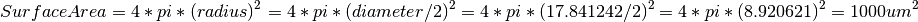
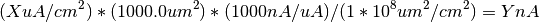

This variable from HodgkinHuxley.py:
C_m = 1.0
"""membrane capacitance, in uF/cm^2"""
Is used in this line in NML2_SingleCompHHCell.nml:
<specificCapacitance value="1.0 uF_per_cm2"/>
These variables from HodgkinHuxley.py:
g_Na = 120.0
"""Sodium (Na) maximum conducances, in mS/cm^2"""
E_Na = 50.0
"""Sodium (Na) Nernst reversal potentials, in mV"""
Is used in this line in NML2_SingleCompHHCell.nml:
<channelDensity id="naChans" ionChannel="naChan" condDensity="120.0 mS_per_cm2" erev="50.0 mV" ion="na"/>
These variables from HodgkinHuxley.py:
g_K = 36.0
"""Postassium (K) maximum conducances, in mS/cm^2"""
E_K = -77.0
"""Postassium (K) Nernst reversal potentials, in mV"""
Is used in this line in NML2_SingleCompHHCell.nml:
<channelDensity id="kChans" ionChannel="kChan" condDensity="36 mS_per_cm2" erev="-77mV" ion="k"/>
These variables from HodgkinHuxley.py:
g_L = 0.3
"""Leak maximum conducances, in mS/cm^2"""
E_L = -54.387
"""Leak Nernst reversal potentials, in mV"""
Is used in this line in NML2_SingleCompHHCell.nml:
<channelDensity id="leak" ionChannel="passiveChan" condDensity="0.3 mS_per_cm2" erev="-54.387mV"/>
This variable from HodgkinHuxley.py:
t = sp.arange(0.0, 450.0, 0.01)
""" The time to integrate over """
Is used in this line in LEMS_NML2_Ex5_DetCell.xml:
<Simulation id="sim1" length="450ms" step="0.01ms" target="net1">
The method from HodgkinHuxley.py takes the input in as a current density in the form of uA/cm^2. NeuroML/LEMS uses an input current in the form of nA, which requires a conversion in the input values.
This method from HodgkinHuxley.py:
1 2 3 4 5 6 7 8 9 10 11 | def I_inj(self, t):
"""
External Current
| :param t: time
| :return: step up to 10 uA/cm^2 at t>100
| step down to 0 uA/cm^2 at t>200
| step up to 35 uA/cm^2 at t>300
| step down to 0 uA/cm^2 at t>400
"""
return 10*(t>100) - 10*(t>200) + 35*(t>300) - 35*(t>400)
|
By using a given surface area of 1000.0 um^2 in the cell, it makes the conversion from uA/cm^2 to nA easier.

<segment id="0" name="soma">
<proximal x="0" y="0" z="0" diameter="17.841242"/> <!--Gives a convenient surface area of 1000.0 um^2-->
<distal x="0" y="0" z="0" diameter="17.841242"/>
</segment>
Given a surface area of 1000.0 um^2 in the cell the following equation is used to convert from X uA/cm^2 to Y nA:

Line 11 can then be translated into the delay, duration and amplitude of the two pulseGenerator objects in NML2_SingleCompHHCell.nml:
<pulseGenerator id="pulseGen1" delay="100ms" duration="100ms" amplitude="0.10nA"/>
<pulseGenerator id="pulseGen2" delay="300ms" duration="100ms" amplitude="0.35nA"/>
Functions of membrane voltage
These methods from HodgkinHuxley.py:
1 2 3 | def alpha_m(self, V):
"""Channel gating kinetics. Functions of membrane voltage"""
return 0.1*(V+40.0)/(1.0 - sp.exp(-(V+40.0) / 10.0))
|
1 2 3 | def beta_m(self, V):
"""Channel gating kinetics. Functions of membrane voltage"""
return 4.0*sp.exp(-(V+65.0) / 18.0)
|
Are used in these lines in NML2_SingleCompHHCell.nml:
<gateHHrates id="m" instances="3">
<forwardRate type="HHExpLinearRate" rate="1per_ms" midpoint="-40mV" scale="10mV"/>
<reverseRate type="HHExpRate" rate="4per_ms" midpoint="-65mV" scale="-18mV"/>
</gateHHrates>
Functions of membrane voltage
These methods from HodgkinHuxley.py:
1 2 3 | def alpha_h(self, V):
"""Channel gating kinetics. Functions of membrane voltage"""
return 0.07*sp.exp(-(V+65.0) / 20.0)
|
1 2 3 | def beta_h(self, V):
"""Channel gating kinetics. Functions of membrane voltage"""
return 1.0/(1.0 + sp.exp(-(V+35.0) / 10.0))
|
Are used in these lines in NML2_SingleCompHHCell.nml:
<gateHHrates id="h" instances="1">
<forwardRate type="HHExpRate" rate="0.07per_ms" midpoint="-65mV" scale="-20mV"/>
<reverseRate type="HHSigmoidRate" rate="1per_ms" midpoint="-35mV" scale="10mV"/>
</gateHHrates>
Functions of membrane voltage
These methods from HodgkinHuxley.py:
1 2 3 | def alpha_n(self, V):
"""Channel gating kinetics. Functions of membrane voltage"""
return 0.01*(V+55.0)/(1.0 - sp.exp(-(V+55.0) / 10.0))
|
1 2 3 | def beta_n(self, V):
"""Channel gating kinetics. Functions of membrane voltage"""
return 0.125*sp.exp(-(V+65) / 80.0)
|
Are used in these lines in NML2_SingleCompHHCell.nml:
<gateHHrates id="n" instances="4">
<forwardRate type="HHExpLinearRate" rate="0.1per_ms" midpoint="-55mV" scale="10mV"/>
<reverseRate type="HHExpRate" rate="0.125per_ms" midpoint="-65mV" scale="-80mV"/>
</gateHHrates>
This line from HodgkinHuxley.py:
X = odeint(self.dALLdt, [-65, 0.05, 0.6, 0.32], self.t, args=(self,))
Is used to define the initial values for the model in NML2_SingleCompHHCell.nml:
<initMembPotential value="-65mV"/>
Where do the rest of these initial values from HodgkinHuxley.py fit into the NeuroML/LEMS Model?
This line in HodgkinHuxley.py:
plt.subplot(4,1,1)
plt.title('Hodgkin-Huxley Neuron')
plt.plot(self.t, V, 'k')
plt.ylabel('V (mV)')
Is used in these lines in LEMS_NML2_Ex5_DetCell.xml:
<Display id="d1" title="Hodgkin-Huxley Neuron: V (mV)" timeScale="1ms" xmin="0" xmax="450" ymin="-90" ymax="50">
<Line id="v" quantity="hhpop[0]/v" scale="1mV" color="#ffffff" timeScale="1ms"/>
</Display>
This line in HodgkinHuxley.py:
plt.subplot(4,1,2)
plt.plot(self.t, ina, 'c', label='$I_{Na}$')
plt.plot(self.t, ik, 'y', label='$I_{K}$')
plt.plot(self.t, il, 'm', label='$I_{L}$')
plt.ylabel('Current')
plt.legend()
Is used in these lines in LEMS_NML2_Ex5_DetCell.xml:
<Display id="d3" title="Hodgkin-Huxley Neuron: Current" timeScale="1ms" xmin="0" xmax="450" ymin="-10" ymax="10">
<Line id="I_na" quantity="hhpop[0]/bioPhys1/membraneProperties/naChans/iDensity" scale="1" color="#000000" timeScale="1ms"/>
<Line id="I_k" quantity="hhpop[0]/bioPhys1/membraneProperties/kChans/iDensity" scale="1" color="#ff0000" timeScale="1ms"/>
<Line id="I_l" quantity="hhpop[0]/bioPhys1/membraneProperties/leak/iDensity" scale="1" color="#ff0000" timeScale="1ms"/>
</Display>
This line in HodgkinHuxley.py:
plt.subplot(4,1,3)
plt.plot(self.t, m, 'r', label='m')
plt.plot(self.t, h, 'g', label='h')
plt.plot(self.t, n, 'b', label='n')
plt.ylabel('Gating Value')
plt.legend()
Is used in these lines in LEMS_NML2_Ex5_DetCell.xml:
<Display id="d2" title="Hodgkin-Huxley Neuron: Gating Value" timeScale="1ms" xmin="0" xmax="450" ymin="-0.1" ymax="1.1">
<Line id="m" quantity="hhpop[0]/bioPhys1/membraneProperties/naChans/naChan/m/q" scale="1" color="#000000" timeScale="1ms"/>
<Line id="h" quantity="hhpop[0]/bioPhys1/membraneProperties/naChans/naChan/h/q" scale="1" color="#ff0000" timeScale="1ms"/>
<Line id="n" quantity="hhpop[0]/bioPhys1/membraneProperties/kChans/kChan/n/q" scale="1" color="#0000ff" timeScale="1ms"/>
</Display>
This line in HodgkinHuxley.py:
plt.subplot(4,1,4)
plt.plot(self.t, self.I_inj(self.t), 'k')
plt.xlabel('t (ms)')
plt.ylabel('$I_{inj}$ ($\\mu{A}/cm^2$)')
plt.ylim(-1, 40)
Is used in these lines in LEMS_NML2_Ex5_DetCell.xml:
<Display id="d4" title="Hodgkin-Huxley Neuron: I_inj ( nA )" timeScale="1ms" xmin="0" xmax="450" ymin="-0.01" ymax="0.4">
<Line id="I_inj1" quantity="hhpop[0]/pulseGen1/i" scale="1nA" color="#004040" timeScale="1ms"/>
<Line id="I_inj2" quantity="hhpop[0]/pulseGen2/i" scale="1nA" color="#004040" timeScale="1ms"/>
</Display>